| |
Superman el Último Escape Review
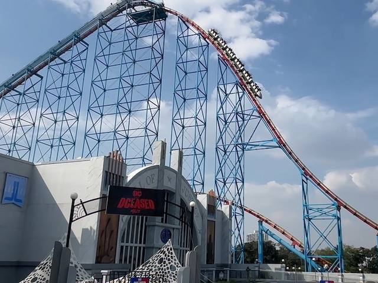
Today at Incrediblecoasters, we're going to be reviewing Superman el Último Escape at Six Flags Mexico. Now this is an interesting ride as while this looks like just an average Morgan Hyper coaster, the consensus from other enthusiasts is that Superman el Último Escape is an underhyped Morgan Hyper that is so much better than the Morgan Trio, with stronger airtime, crazier laterals, and just an overall better ride. It just doesn't get the praise it deserves because Six Flags Mexico is a bit out of the way for most American coaster enthusiasts, and hasn't been visited. Well, we're here. Let's see if this is true. After getting in the cars and pulling down the lap bar, you go out of the station. You dip out of the station and into some straight track, going into this sort of middle of nowhere vibe. We then head down a tiny little drop before going into a small bump. Hey. There's actually a litte bit of airtime here. We then head into a downward helix, actually gaining some speed. We then rise up and hit some brakes. Wow. I know this isn't a hyper coaster. But....that's actually a REALLY fun pre-lift. If I ever decide to make that a Top 10 List, there's a really good chance this makes the list. Anyways, we dip down, go around a turn, and begin to actually climb the lifthill. Yeah. Now it's actually turning into a proper hyper. Hmm. So far, the hype seems justified. While climbing up the lifthill, we get a GREAT view of Six Flags Mexico, and you can even see a bit of the Mexico City skyline from up here. We eventually reach the top, get a nice look at the ride we're on, plus some neighboring coasters (Batman and Wonder Woman). And then we drop. We gain a TON of speed before dropping into the tunnel at the bottom. Yeah. It's nothing special. But this is still a hyper coaster, and even the worst hyper coaster has a great first drop since.....that and speed are the things that make a hyper coaster.....a hyper coaster. And this is definately a great one. We then rise up into a large hill. Despite being pretty damn big, we don't lose much speed flying up here, getting a nice pop of airtime up here. Hmm. So far, this is really good. And then, we get to the part of the ride that really makes this ride special. The lateral section. We then drop back down to the ground. But this time, it's a large curved drop. So we're not only pouring on the speed, but we're also getting some GREAT laterals here. From here, we then head into......a sort of large curved helix hill. This right here is the highlight of the ride. Because not only are we simply rising up into the sky, but because this entire element is a giant lateral, we are pinned to the side of our seat throughout the ENTIRITY of the time. Think of this element sort of as a non-inverting loop combined with a Wild Mosue turn. Or the inverse of that spiral drop on Mindbender @ SFOG. We then rise up into another large hill, giving us a nice pop of ejector air. We then go down a curved drop, gaining more speed and laterals, before extending into a large banked turn. We rise up into another hill, gaining another pop of airtime before gliding into the midcourse brakes. DAMN!!! I can sort of see the hype this ride gets. This however, is where the ride stops being special and just sort of transforms into another member of the Morgan Hyper Trio. As such, we drop back down, gaining more speed, and heading into the first bunny hop, giving us some nice floater air. Rise and repeat as we go over another airtime hill. Wee! More floater air! We then head into a small curved hill, just going through a couple turns above the ground. Right by where the pre-lift section is. And just like that, we glide right into the brake run. So is the hype justified? Eh....honestly, No. Yes. Superman el Último Escape is a really fun ride and a good hyper coaster. It is indeed a step above the Morgan Trio. HOWEVER, when other enthusiasts say that this ride is on par with Phantoms Revenge, I'm sorry. But No. I can not sign off on that opinion. But at the end of the day, that shouldnt matter, because what really matters is the fact that Superman el Último Escape is a strong hyper coaster with nice speed, some good airtime, and a CRAZY lateral session that honestly is the highlight of the ride. And another tip. This ride gets better when its all warmed up. Yeah. This is definatley something you don't want to miss if you're at Six Flags Mexico.
8/10
Location: Six Flags Mexico
Opened: 2004
Built by: Morgan
Last Ridden: October 18, 2024
Superman el Último Escape Photos
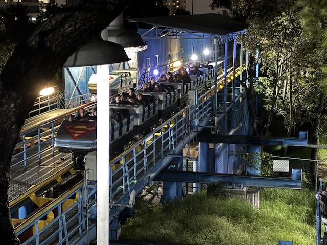
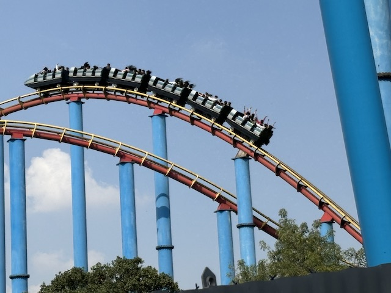
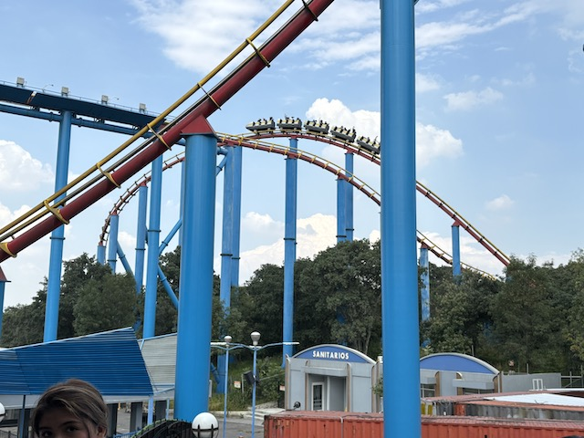
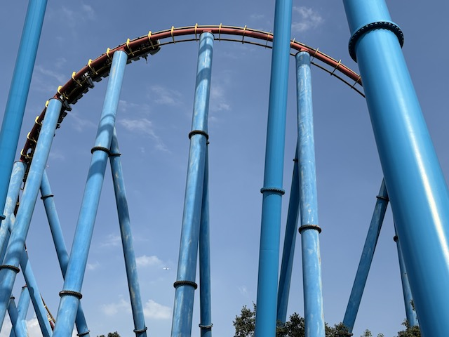
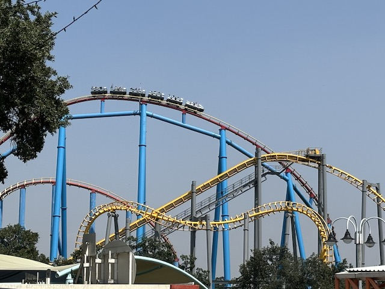
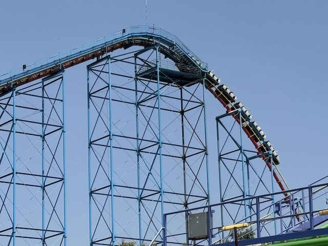
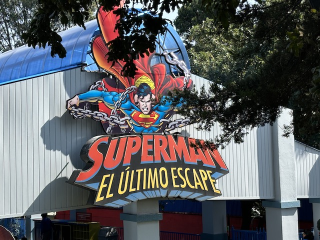
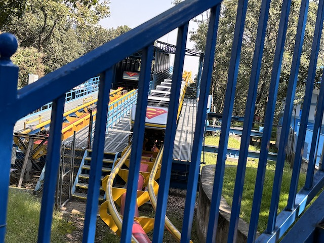
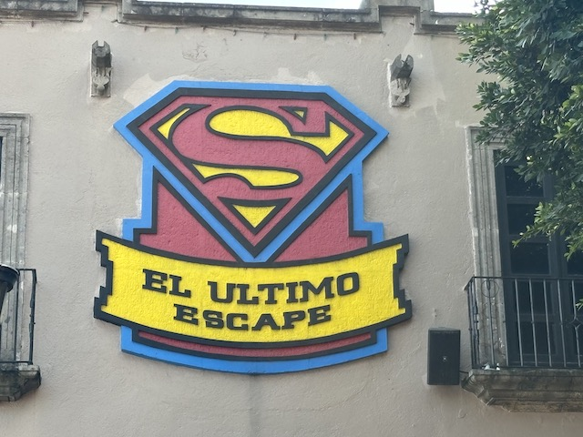
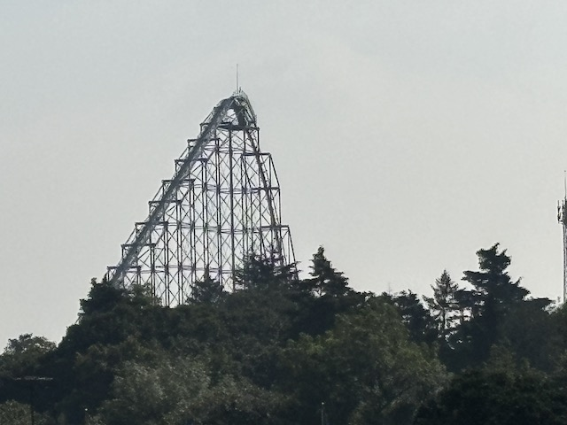
Home
|